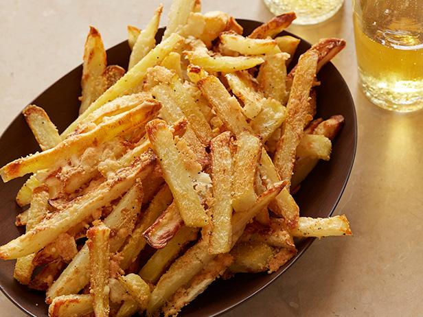

Crispy Oven Baked Fries

Amazing and crunchy fries without the need to deep fry!
These fries are great for anyone who wants to make delicious and crunchy fries
using only a stove top and a conventional oven. These fries will stay crispy for
a long time after making so it's easy to throw in with any main course meal you
would like to prepare.
The recipe comes down to simply boiling our russet potatoes in water to the point
where they are nearly falling apart. Once this is done, we'll throw them into an
oven at 450 degrees fahrenheit for about 30-50 minutes. These are not healthy by
any means since we will still be using oil, but they are much easier to prepare
than a deep fry.
Ingredients
- 2 large russet potatoes
- vegetable or peanut oil
- salt
- pepper
- vinegar
- Prepare a pot of water for boiling on your stove top. Add about a half a cup of
vinegar to the water. Throw in some salt as well.
- Preheat the oven to 450 degrees fahrenheit.
- Peel your russet potatoes and cut them up into equal sized fry shapes.
It is extremely important that these are all as close to the same size as possible.
- Boil your potato sticks until they are barely able to stay together.
- Pour out the potatoes gently into a colander.
- Place the potatoes on a cooking sheet and pour your oil of choice over all the
potatoes. Using your hands, mix the potatoes and oil until everything has been
coated.
- Place the potatoes in the oven and cook for about 30 minutes. Flip all the fries
over to evenly cook them and cook for about another 20-30 minutes. They should be
golden brown when finished.
- Pour out all the fries and oil into a bowl with several paper towels inside.
- Season the fries with salt and pepper as well as any additional seasonings you'd like.
- Remove the fries from the bowl and serve while hot.